library(tidycensus)
library(tidyverse)
library(tigris)
library(patchwork)
library(sf)
options(tigris_use_cache = TRUE)This article will explore some interesting aspects of New Mexico’s racial demographics using R and the TidyCensus package. The US Census Bureau makes an amazing amount of data available to the public on https://census.gov. The site allows you to easily search for and download demographic information with myriad variables and geographic subsets. The site also provides an API for programmatic access, and R is fortunate to have the TidyCensus package to easily grab data of interest to the programmer.
New Mexico has relatively large Native American and Hispanic populations. Nearly half of New Mexico residents are Hispanic, compared to a national average of around 20% (we’ll calculate it later). The profile of Latinos in New Mexico, however, is very different from the rest of the country, as we shall see.
Not only is the Hispanic population of New Mexico uniquely large in percentage terms, it is also unusual in terms of national identity of the Hispanics. Unlike Latinos in most of the rest of the country, many Hispanics in New Mexico do not identify at all with Latin America, but directly with their European ancestry.
The rest of this article will explore the Hispanic population in New Mexico and the historical context which explains this particular situation. Along the way, I will show how to use the R package tidycensus to access the wealth of data on https://census.gov.
A little history
New Mexico has the oldest state capital in the United States, Santa Fe having been founded 10 years before Boston. While the British were exploring from the coast, the Spaniards were moving upwards from what was to be Mexico into the territory that would become New Mexico.
Mexico won independence from Spain in 1821, and that included New Mexico. While the Spanixh residents gave nominal allegiance to Mexico, it was never very enthusiastic. After the Treaty of Hidalgo, in which the territory of New Mexico was ceded to the United States, Hispanics quickly dropped any pro-Mexican sentiment, they might have had and were anxious to assert their identity as Americans with roots in Europe, not Latin America. This group is called nuevomexicanos by many, but in New Mexico they are called Hispanos.
Immigrants in New Mexico
Getting ACS data
Before looking at Latinos specifically, I would like to take a quick look at immigration to New Mexico, since many Hispanics are immigrants. Using get_acs() I can get data from the American Community Survey 5-year tables. The most time-consuming part is sifting through the thousands of variables to find the ones you want. Fortunately, tidycensus provides a function to download the variables, which can then be Viewed and searched.
v23 <- load_variables(2023, "acs5", cache = TRUE)
View(v23)pob_vars = c(
Native = "B05002_002",
ForeignBorn = "B05002_013"
)Now I can use get_acs() to download the data. There are many possibilities for geography, which is required. Some are obvious like “us”, “state” and “county”. I specify which state I want. The summary_var argument adds an additional column to the data frame containing totals, allowing for easy calculations of percentages.
get_acs() has an optional argument which can be passed, geometry = TRUE. This handy method adds geometries from tigris and returns the sf object necessary for cartographic plotting. Unfortunately, I get errors using this for county and state data, so I need to manually perform the process.
First, I’ll grab shapes for the states and for the counties in New Mexico. The shift_geometry() function will put Alaska and Hawaii in a convenient place on the maps.
library(tigris)
states <- states() |>
select(GEOID, state = NAME, geometry) |>
shift_geometry()Retrieving data for the year 2021nm_counties <- counties("NM") |>
select(GEOID, county = NAME, geometry)Retrieving data for the year 2022Now, with standard dplyr syntax, I can create the sf data frame. I want to do comparisons to the US in general, so I will also get data for all 50 states.
immigration_23 <- get_acs(
geography = "county",
state = "NM",
variables = pob_vars,
summary_var = "B05002_001",
year = 2023,
cache_table = TRUE,
) |>
left_join(nm_counties, by = "GEOID") |>
select(variable, estimate, moe,
county, summary_est, geometry) |>
st_as_sf()Getting data from the 2019-2023 5-year ACSimmigration_us <- get_acs(
geography = "state",
variables = pob_vars,
summary_var = "B05002_001",
year = 2023,
cache_table = TRUE,
) |>
left_join(states, by = "GEOID") |>
select(variable, estimate, moe,
state, summary_est, geometry) |>
st_as_sf()Getting data from the 2019-2023 5-year ACSPercentages can be more interesting than raw numbers, so I will calculate them:
immigration_23$pct_foreign = immigration_23$estimate / immigration_23$summary_est
immigration_us$pct_foreign = immigration_us$estimate / immigration_us$summary_estNow we can see some basic stats:
pct_fb_nm <- with(
immigration_23,
mean(pct_foreign[variable == "ForeignBorn"]))
pct_fb_us <- with(
immigration_us,
mean(pct_foreign[variable == "ForeignBorn"]))
data.frame(
Area = c("New Mexico", "US"),
Average = c(pct_fb_nm, pct_fb_us)
) Area Average
1 New Mexico 0.06774040
2 US 0.09565981Despite having a the largest Hispanic population in the country, New Mexico has a much smaller percentage of immigrants than the overall average.
Visualizing the data
Now I would like to visualize the data. (Explaining ggplot is beyond the scope of this article.)
p1 <- ggplot(immigration_23,
aes(x = variable, y = estimate)) +
geom_col(fill = "navy") +
labs(x = element_blank(),
y = "Population",
fill = "County",
title = "New Mexico",
caption = "acs5 2023") +
scale_y_continuous(labels = scales::comma) +
theme_bw()
p2 <- ggplot(immigration_us, aes(x = variable, y = estimate)) +
geom_col(fill = "navy") +
labs(x = element_blank(),
y = "Population",
title = "US",
caption = "acs5 2023") +
scale_y_continuous(labels = scales::comma) +
labs(y = element_blank()) +
theme_bw()
p1 + p2
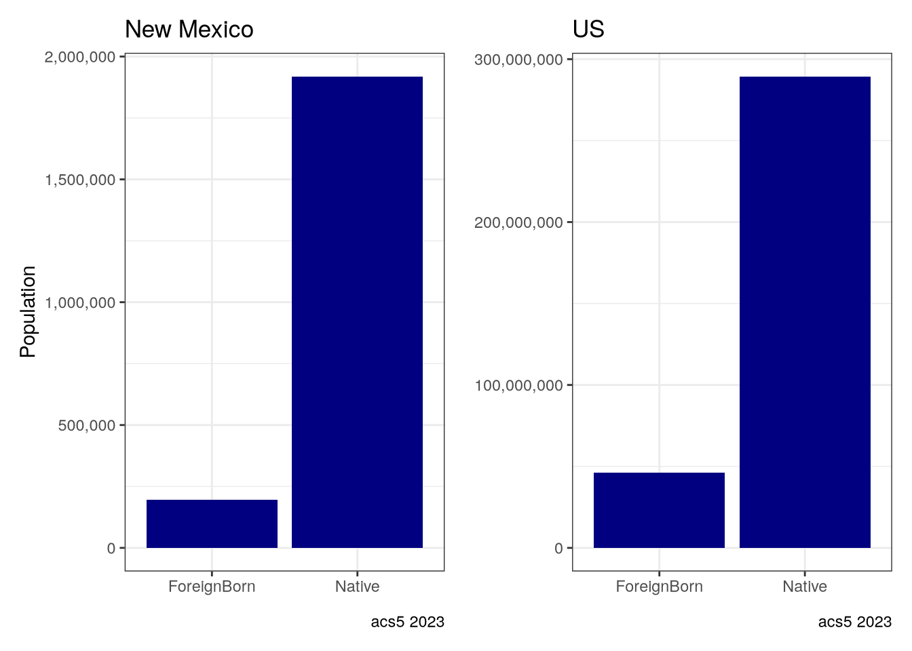
We can see on a map where the largest concentration of immigrant groups are.
immigration_us$percent <- immigration_us$estimate / immigration_us$summary_est
immigration_us |>
filter(variable == "ForeignBorn") |>
ggplot(aes(fill = percent)) +
geom_sf(aes(geometry = geometry)) +
scale_fill_viridis_c(labels = scales::percent) +
labs(title = "Immigrant population by state",
caption = "acs5 2023") +
theme_void() +
theme(plot.margin = margin(.3,.3,.3,.3, "cm"))
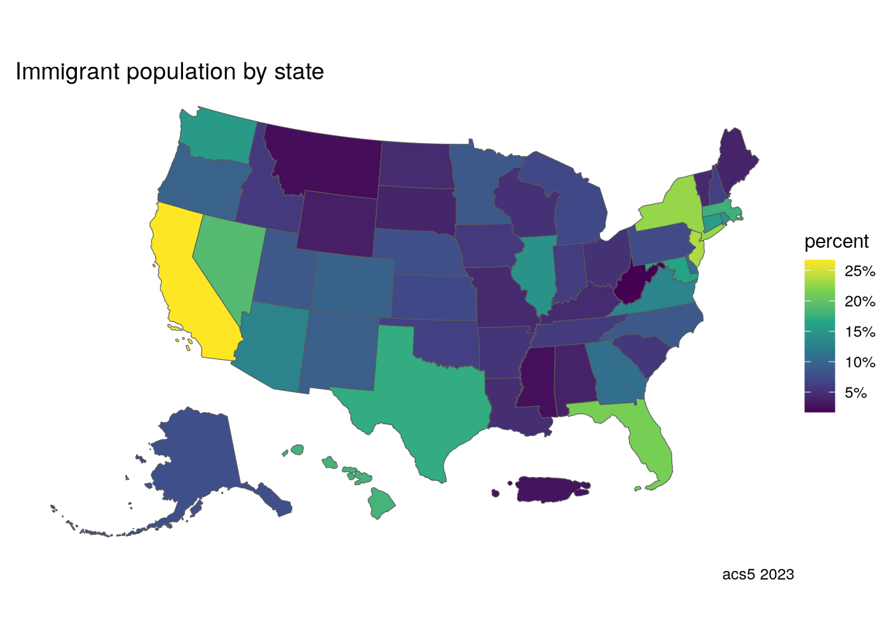
immigration_23 |>
filter(variable == "ForeignBorn") |>
ggplot(aes(fill = pct_foreign)) +
geom_sf(aes(geometry = geometry)) +
scale_fill_viridis_c(labels = scales::percent) +
labs(title = "NM Immigrant population by county",
caption = "acs5 2023",
fill = "percent") +
theme_void() +
theme(plot.margin = margin(.3,.3,.3,.3, "cm"))
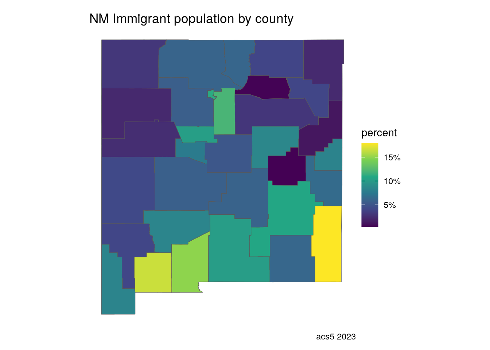
Not surprisingly, the highest percentage is near the Mexican border.
Origins of immigrants
Since we are concerned with Hispanics, it is useful to have an idea about immigration from Latin America, and Mexico in particular given that NM is a border state.
orig_vars_23 = c(
Europe = "B05006_002",
Asia = "B05006_047",
Eastern_Asia = "B05006_048",
China = "B05006_049",
Asia_SC = "B05006_056",
Asia_SE = "B05006_068",
Vietnam = "B05006_077",
Asia_W = "B05006_079",
Africa = "B05006_095",
Oceania = "B05006_130",
Latin_America = "B05006_139",
Caribbean = "B05006_140",
Central_America = "B05006_154",
Mexico = "B05006_160",
South_America = "B05006_164",
Canada = "B05006_177"
)foreign_origin_nm <- get_acs(
geography = "county",
state = "NM",
variables = orig_vars_23,
summary_var = "B05006_001",
year = 2023,
cache_table = TRUE
) |>
left_join(nm_counties, by = "GEOID") |>
select(variable, estimate, moe,
county, total = summary_est,
geometry) |>
st_as_sf()Getting data from the 2019-2023 5-year ACScontinents <- c(
"Europe",
"Central_America",
"Asia",
"South_America",
"Africa",
"Oceania",
"Canada"
)foreign_origin_nm |>
filter(variable %in% continents) |>
mutate(variable = fct_reorder(variable, desc(estimate))) |>
ggplot(aes(x = variable, y = estimate, fill = county)) +
geom_col() +
labs(x = "Continent",
y = "Population",
fill = "County",
title = "Origins of foreign-born New Mexico population",
subtitle = "By Continent",
caption = "acs5 2023") +
scale_y_continuous(labels = scales::comma) +
theme_gray() +
theme(axis.text.x = element_text(angle = 30),
plot.margin = margin(.3,.3,.3,.3, "cm"))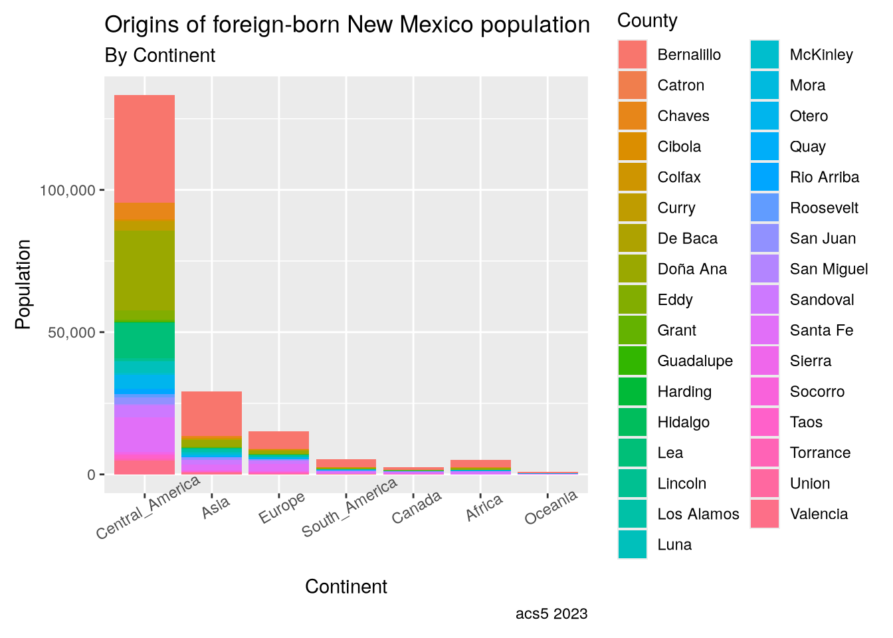
The largest group of immigrants is from Central America, which includes Mexico in these tables. Zooming in on the eight most populated counties is interesting, showing a sizeable number of Asian immigrants, especially around Albuquerque (Bernalillo County).
counties_top_8 <- foreign_origin_nm |>
group_by(county) |>
summarise(est_sum = sum(estimate)) |>
slice_max(order_by = est_sum, n = 8) |>
ungroup()foreign_origin_nm |>
filter(variable %in% continents & county %in% counties_top_8$county) |>
mutate(county = fct_reorder(county, desc(total))) |>
ggplot(aes(x = county, y = estimate, fill = variable)) +
geom_col() +
labs(x = "County",
y = "Population",
fill = "Continent",
title = "Origins of foreign-born New Mexico population",
subtitle = "Top 10 Counties by Population") +
scale_y_continuous(labels = scales::comma) +
scale_fill_viridis_d(labels = c("Africa", "Asia", "Canada", "Central America",
"Europe", "Oceania", "South America")) +
theme_gray() +
theme(axis.text.x = element_text(angle = 30))
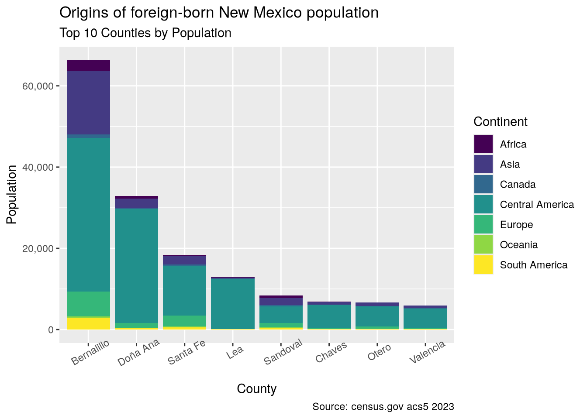
Hispanics
Let’s look at where most Latinos live in the country.
us_hisp_pct <- get_acs(
geography = "state",
variables = c("B03001_002", "B03001_003"),
summary_var = "B03001_001",
year = 2023,
cache_table = TRUE
) |>
select(-moe, -summary_moe) |>
pivot_wider(names_from = variable,
values_from = estimate) |>
rename(State = "NAME",
Total = "summary_est",
Non_Hispanic = "B03001_002",
Hispanic = "B03001_003") |>
mutate(Hispanic_Pct = Hispanic / Total) |>
left_join(states, by = "GEOID") |>
st_as_sf() |>
shift_geometry()Getting data from the 2019-2023 5-year ACSWarning: None of your features are in Alaska, Hawaii, or Puerto Rico, so no geometries will be shifted.
Transforming your object's CRS to 'ESRI:102003'us_hisp_pct |>
filter(state != "Puerto Rico") |>
ggplot(aes(fill = Hispanic_Pct)) +
geom_sf() +
labs(title = "Hispanic Population by State",
fill = "Percent",
) +
scale_fill_viridis_c(labels = scales::percent,
limits = c(0,.5)) +
theme_void() +
theme(plot.margin = margin(.5,.5,.5,.5, "cm"))
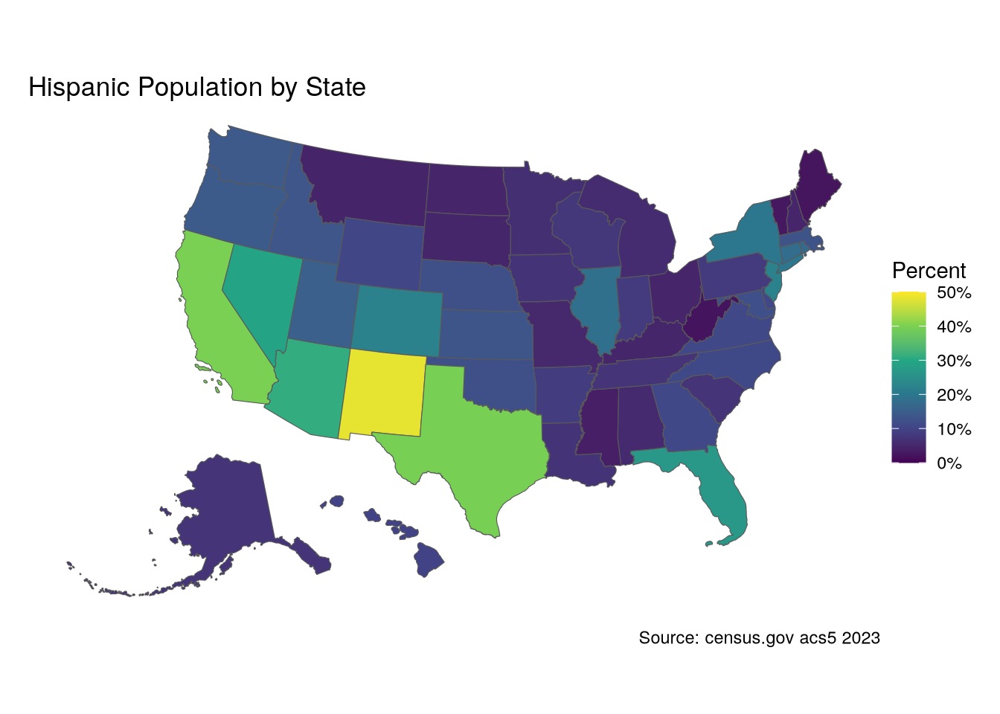
Let’s see the top 5 states by total Latinos. Not surprisingly, the largest states have the largest population of Hispanics, and New Mexico doesn’t even make the list.
us_hisp_pct |>
st_drop_geometry() |>
slice_max(order_by = Hispanic, n = 8) |>
select(State, Hispanic)# A tibble: 8 × 2
State Hispanic
<chr> <dbl>
1 California 15630830
2 Texas 11697134
3 Florida 5865737
4 New York 3898652
5 Puerto Rico 3215824
6 Illinois 2348118
7 Arizona 2255770
8 New Jersey 2032968On the other hand, looking by percentage tells a different story:
us_hisp_pct |>
st_drop_geometry() |>
slice_max(order_by = Hispanic_Pct, n = 8) |>
select(State, Hispanic_Pct)# A tibble: 8 × 2
State Hispanic_Pct
<chr> <dbl>
1 Puerto Rico 0.988
2 New Mexico 0.482
3 California 0.398
4 Texas 0.395
5 Arizona 0.310
6 Nevada 0.292
7 Florida 0.267
8 Colorado 0.222As you can see, New Mexico is the state with the highest proportion of Latinos, nearly half, and almost 10% higher than the next highest states.
We can see how Latinos are spread across New Mexico:
nm_hisp_pct <- get_acs(
geography = "county",
state = "NM",
variables = c("B03001_002", "B03001_003"),
summary_var = "B03001_001",
year = 2023,
cache_table = TRUE) |>
left_join(nm_counties,
by = "GEOID") |>
select(-moe, -summary_moe) |>
pivot_wider(names_from = variable, values_from = estimate) |>
rename(County = "NAME", Total = "summary_est",
Non_Hispanic = "B03001_002", Hispanic = "B03001_003") |>
mutate(Hispanic_Pct = Hispanic / Total) |>
st_as_sf()Getting data from the 2019-2023 5-year ACSggplot(nm_hisp_pct, aes(fill = Hispanic_Pct)) +
geom_sf() +
labs(title = "Hispanic Population in New Mexico",
fill = "Percent",
) +
scale_fill_viridis_c(labels = scales::percent, limits = c(0,.8)) +
theme_void() +
theme(plot.margin = margin(.3,.3,.3,.3, "cm"))
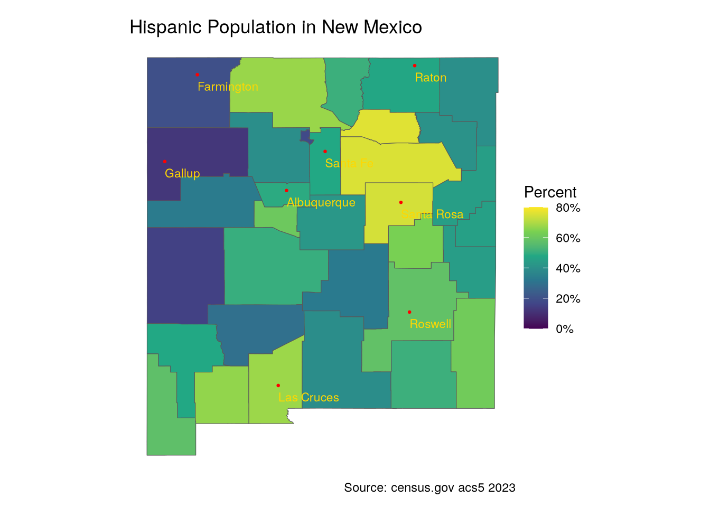
The highest concentrations are not along the border, but in the Northern counties. These are the counties with the largest percentage of Hispanics, followed by the percentages in New Mexico’s most populated counties.
nm_hisp_pct |>
slice_max(order_by = Hispanic_Pct, n = 8) |>
st_drop_geometry() |>
select(county, Hispanic_Pct)# A tibble: 8 × 2
county Hispanic_Pct
<chr> <dbl>
1 Mora 0.761
2 San Miguel 0.753
3 Guadalupe 0.745
4 Doña Ana 0.676
5 Rio Arriba 0.673
6 Luna 0.665
7 De Baca 0.635
8 Lea 0.616nm_hisp_pct |>
filter(county %in% counties_top_8$county) |>
st_drop_geometry() |>
select(county, Hispanic_Pct)# A tibble: 8 × 2
county Hispanic_Pct
<chr> <dbl>
1 Bernalillo 0.489
2 Chaves 0.579
3 Doña Ana 0.676
4 Lea 0.616
5 Otero 0.391
6 Sandoval 0.395
7 Santa Fe 0.480
8 Valencia 0.606Hispanic origins
Now let’s look at the national origins of Latinos in New Mexico.
hisp_vars = c(
Non_Hispanic = "B03001_002",
Hispanic = "B03001_003",
Hispanic_Mexican = "B03001_004",
Hispanic_PR = "B03001_005",
Hispanic_Cuba = "B03001_006",
Hispanic_DR = "B03001_007",
Hispanic_CA = "B03001_008",
Hispanic_SA = "B03001_016",
Hispanic_Spaniard = "B03001_028",
Hispanic_Spanish = "B03001_029",
Hispanic_Spanish_American = "B03001_030",
Hispanic_White = "B03002_013"
)
hispanic_nm <- get_acs(
geography = "county",
state = "NM",
variables = hisp_vars,
summary_var = "B03001_001",
year = 2023,
cache_table = TRUE) |>
left_join(nm_counties, by = "GEOID") |>
select(GEOID, variable, estimate, moe,
county, summary_est,
geometry) |>
st_as_sf()Getting data from the 2019-2023 5-year ACShispanic_us <- get_acs(
geography = "state",
variables = hisp_vars,
summary_var = "B03001_001",
year = 2023,
cache_table = TRUE) |>
left_join(states, by = "GEOID") |>
select(GEOID, variable, estimate, moe,
state, summary_est,
geometry) |>
st_as_sf()Getting data from the 2019-2023 5-year ACShispanic_nm <- hispanic_nm |>
pivot_wider(names_from = variable, values_from = estimate) |>
rowwise() |>
mutate(Hispanic_Spain = sum(c_across(Hispanic_Spaniard:Hispanic_Spanish_American), na.rm = TRUE)) |>
select(-c("Hispanic_Spaniard", "Hispanic_Spanish", "Hispanic_Spanish_American")) |>
pivot_longer(cols = Non_Hispanic:Hispanic_Spain, names_to = "variable", values_to = "estimate", values_drop_na = T) |>
group_by(county, variable) |>
mutate(pop = sum(estimate)) |>
distinct(county, variable, .keep_all = TRUE)First, here are the proportions of Hispanic to Non-Hispanic in the biggest counties.
hispanic_nm |>
filter(county %in% counties_top_8$county & variable %in% c("Hispanic", "Non_Hispanic")) |>
mutate(county = fct_reorder(county, desc(estimate))) |>
ggplot(aes(x = county, y = estimate, fill = variable)) +
geom_col(position = "dodge") +
labs(x = "County",
y = "Population",
fill = "Continent",
title = "Hispanic vs Non-Hispanic population in New Mexico",
subtitle = "Top 10 Counties by Population",
caption = "Source: census.gov acs5 2023") +
scale_y_continuous(labels = scales::comma) +
scale_fill_viridis_d(labels = c("Hispanic", "Non Hispanic")) +
theme_gray() +
theme(axis.text.x = element_text(angle = 30)) +
theme(plot.margin = margin(.3,.3,.3,.3, "cm"))
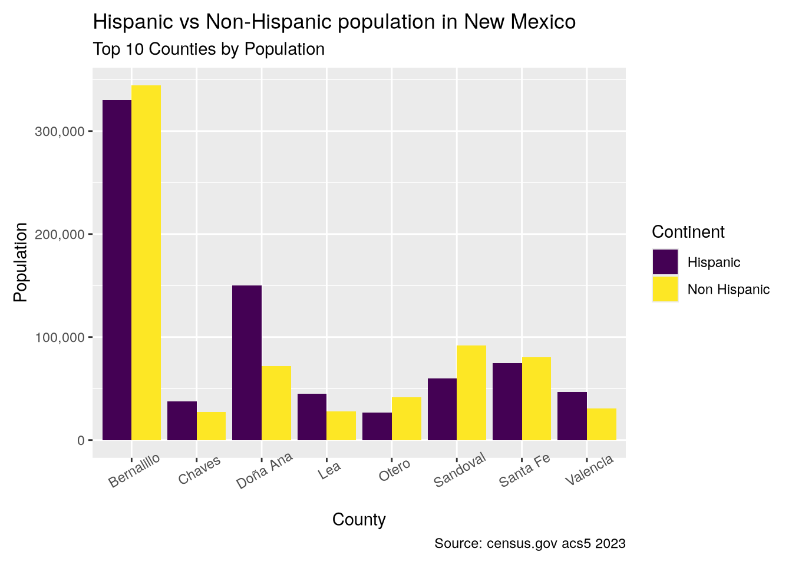
hispanic_us <- get_acs(
geography = "state",
variables = hisp_vars,
summary_var = "B03001_001",
year = 2023,
cache_table = TRUE) |>
rename(state = NAME) |>
pivot_wider(names_from = variable, values_from = estimate) |>
rowwise() |>
mutate(Hispanic_Spain = sum(c_across(Hispanic_Spaniard:Hispanic_Spanish_American), na.rm = TRUE)) |>
select(-c("Hispanic_Spaniard", "Hispanic_Spanish", "Hispanic_Spanish_American")) |>
pivot_longer(cols = Non_Hispanic:Hispanic_Spain, names_to = "variable", values_to = "estimate", values_drop_na = T)|>
group_by(state, variable) |>
mutate(pop = sum(estimate)) |>
distinct(variable, .keep_all = TRUE) |>
mutate(percent = pop / summary_est) |>
left_join(states, by = "GEOID") |>
select(variable, pop, summary_est,
state = state.y, geometry) |>
st_as_sf()Getting data from the 2019-2023 5-year ACSAnd then the national identities from the same counties.
hispanic_nm |>
filter(county %in% counties_top_8$county & !(variable %in% c("Hispanic", "Non_Hispanic"))) |>
mutate(county = fct_reorder(county, desc(pop))) |>
ggplot(aes(x = county, y = pop, fill = factor(variable, levels = c("Hispanic_White", "Hispanic_Spain", "Hispanic_Mexican", "Hispanic_CA")))) +
geom_col(position = "dodge") +
labs(x = "County",
y = "Population",
fill = "Race",
title = "Origin Identification of Hispanic Population",
subtitle = "Top 10 Counties by Population",
caption = "Source: census.gov acs5 2023") +
scale_y_continuous(labels = scales::comma) +
scale_fill_viridis_d(labels = c("White", "Spanish", "Mexican", "Central American")) +
theme_gray() +
theme(axis.text.x = element_text(angle = 30)) +
theme(plot.margin = margin(.3,.3,.3,.3, "cm"))
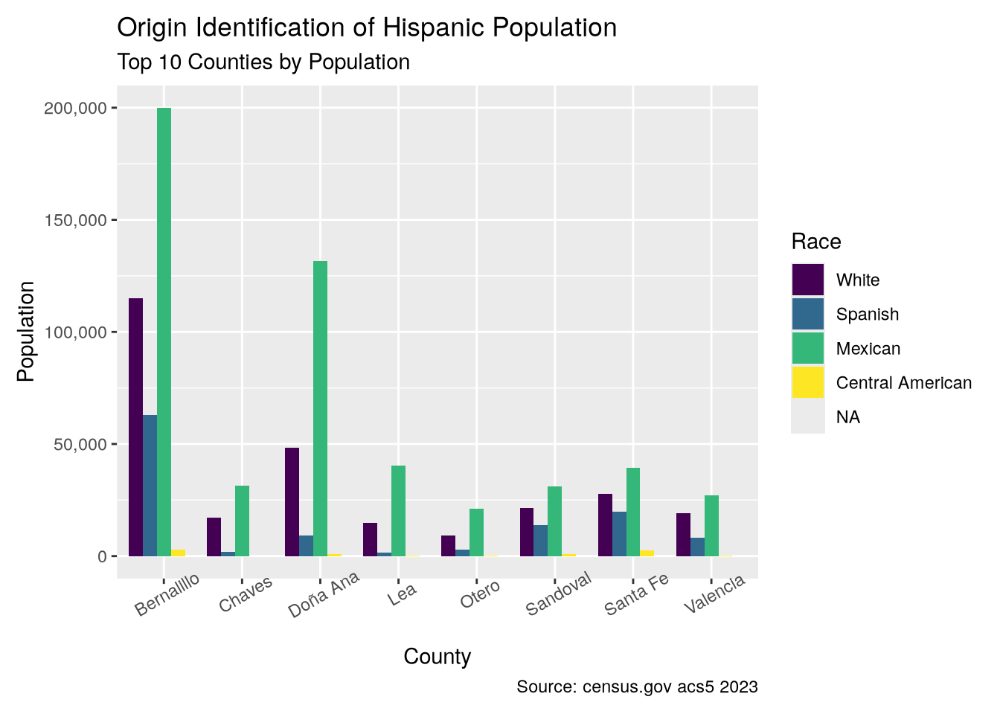
Most Hispanics clearly identify with Mexico, as is true nationally, and White implies European, and therefore Spanish, heritage.
hispanic_us$percent = hispanic_us$pop / hispanic_us$summary_est
hispanic_us |>
filter(state != "Puerto Rico" & !(variable %in% c("Hispanic", "Non_Hispanic"))) |>
group_by(variable) |>
summarise(
pop = sum(pop),
percent = mean(percent)
) |>
mutate(variable = fct_reorder(variable, desc(pop))) |>
ggplot(aes(x = variable, y = pop)) +
geom_col(fill = "cyan") +
labs(x = "Nationality",
y = "Population",
title = "National Identification Hispanics",
caption = "Source: census.gov acs5 2023") +
scale_y_continuous(labels = scales::comma) +
scale_x_discrete(labels = c("Mexican", "White", "Central America", "Puerto Rico",
"South America", "Cuba", "Dominican Republic", "Spain")) +
theme_gray() +
theme(
axis.text.x = element_text(
angle = 30, hjust = .5),
plot.margin = margin(.3,.3,.3,.3, "cm"))
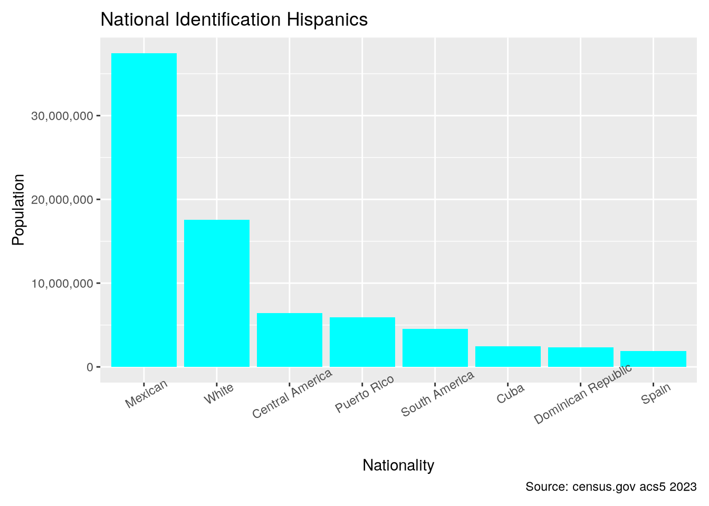
hispanic_us |>
filter(variable == "Hispanic_White") |>
ggplot(aes(fill = percent)) +
geom_sf(aes(geometry = geometry)) +
scale_fill_viridis_c(labels = scales::percent) +
labs(title = "Hispanics with White identity") +
theme_void() +
theme(plot.margin = margin(.3,.3,.3,.3, "cm"))
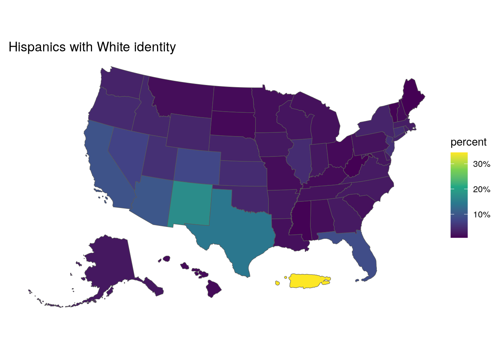
New Mexico has the highest proportion of Hispanics who identify as white after Puerto Rico.